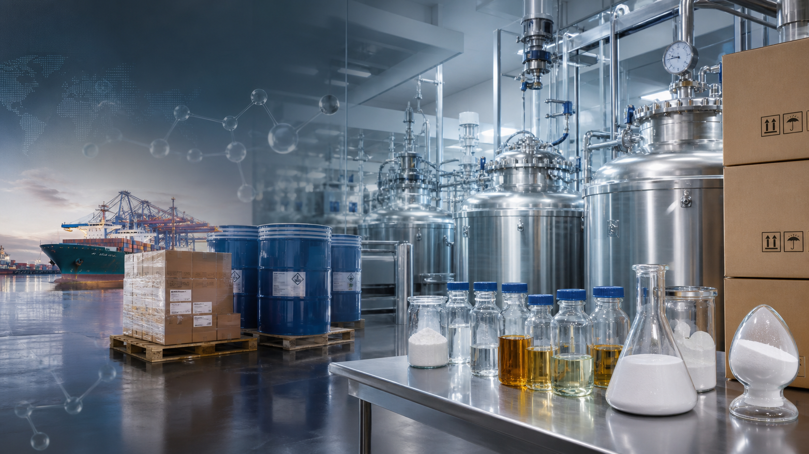
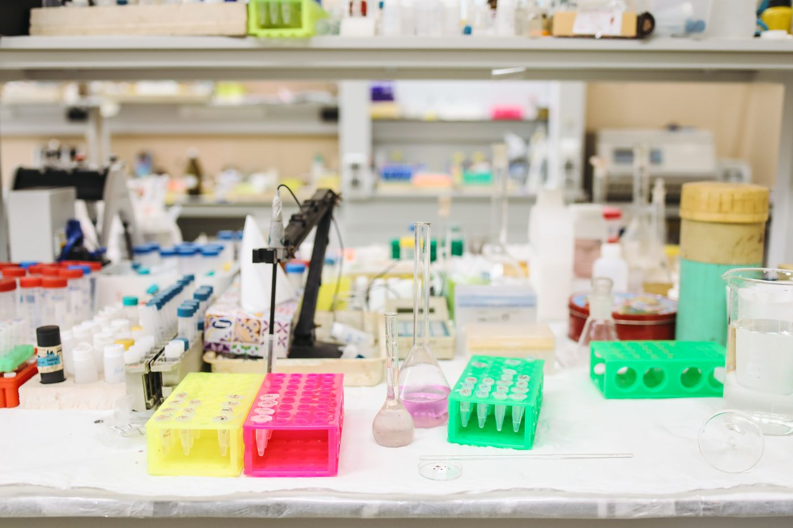
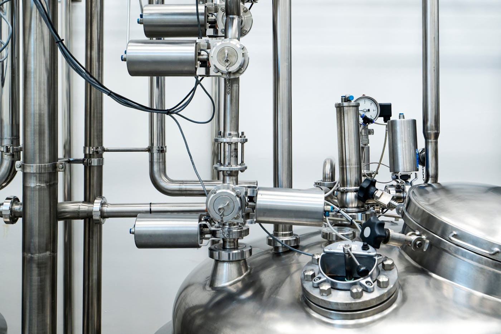

工厂直产直销
减少中间环节，直接对接生产、库存、批次、包装和交期。

Supply Focus
俊杰是面向全球客户的工厂直产直销型中间体供应企业，整合研发、生产、质量控制、外贸出口和跨境交付能力，为医药、农化、染料、电子化学品和定制合成客户提供一体化服务。
俊杰围绕中间体采购最关键的产品匹配、质量文件、出口包装和跨境交付建立服务流程。工厂端直接响应规格、批次和交期需求，外贸端同步处理单证、报关、包装和物流，让客户从技术确认到出口交付获得同一团队协同。
减少中间环节，直接对接生产、库存、批次、包装和交期。
从路线评估、样品验证到放大生产，支持定制合成和规格确认。
同步处理 COA、MSDS、标签、报关、订舱和目的港文件要求。
Capability Platform
从路线评估、样品确认到批次放大，俊杰将研发判断与供应执行连接在同一套项目节奏中，帮助海外客户更快确认可采购、可放大、可出口的中间体方案。

支持结构式确认、目标杂质沟通、替代路线评估、样品制备和定制合成前期判断，让询盘在进入报价前完成关键技术确认。

结合库存产品、合作产能与订单排产，覆盖小试样品、小批量和吨级交付，并同步确认包装、检测、文件与出口节点。
R&D to Delivery
俊杰关注的不只是“是否有货”，而是从分子结构、纯度指标、实体状态、包装方式到目的港文件要求逐项确认，降低跨境采购中的反复沟通成本。